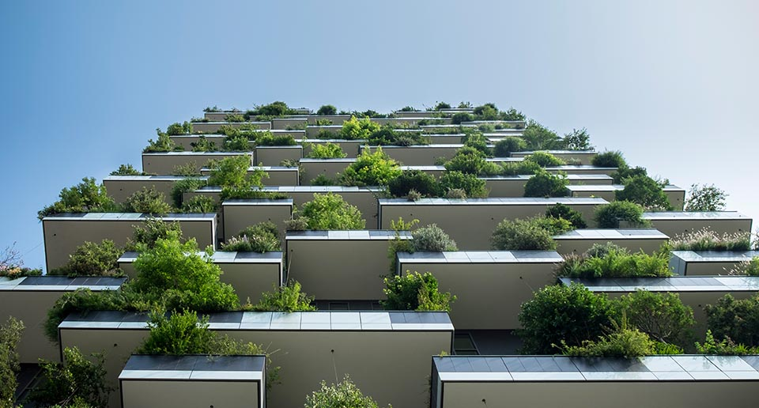

吸引高端人才 努力打造新版本创投服务生态圈
2016·01·18

- 随着移动互联网产业的不断发展，当今创业服务线下平台存在一系列痛点，如：不能提供免费或低价的办公间和住房
- 现有创业培训浪费大量时间和学费；以及创业者对人脉，资金，技术、推广、培训、上市等服务方面的需求问题
- 为解决以上问题，8月12日，中关村门头沟科技园招商一部邀请了天下博士后共14位高端人才参加了“多彩京西行”活动
- 该联盟由投资公司负责人及博士后等高端人才组成，致力于打造第五代双创服务平台，进一步寻求与中关村门头沟园区的资源对接与合作。
- 活动当天，中关村门头沟科技园工作人员带领天下博士后成员参观了园区的创客咖啡、创客工场，
- 并对园区整体规划、产业定位、产业政策进行了详细的介绍
- 随后，双方代表在阳光大厦24层举行了座谈会。本次座谈会由中关村门头沟科技园领导主持，双方围绕打造5.0时代创投服务生态圈
- 建立“线上线下+投资+立体服务”模式以及“新三板、博士后、我就创”三个项目元素进行了深入探讨和交流
- 据天下博士后汪梦翔博士介绍，“新三板、博士后、我就创”三个项目相辅相成
- 项目依托中华博士后联合会和新三板服务联盟，做移动互联网行业的大健康＋企业服务
- 集项目路演、直播、投资、融资、众筹、领投、创业导师与合伙人实战培训大赛、人力资源、为一体的生态智能孵化器系统
- 同时，与园区的合作达成了初步的意向。本次高端人才座谈会，为当今线下创业平台不能满足创业者需求的问题，提供了解决思路与方法
- 中关村门头沟科技园将继续吸引高质量企业和高端人才入住园区，聚人气，并继续打造生态智能系统，谋发展，在吸引高端要素的同时
- 努力打造新版本创投服务生态圈